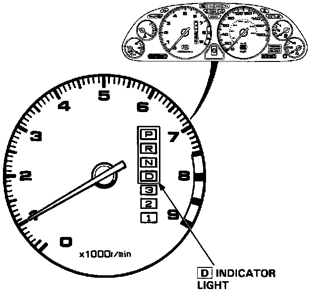
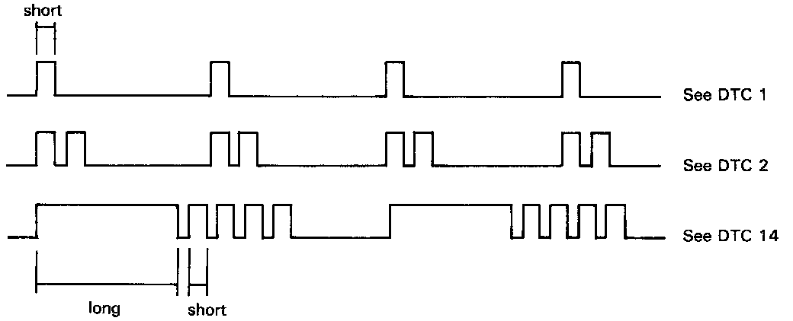

Using A Jumper Wire

HOW TO DISPLAY AND READ DIAGNOSTIC TROUBLE CODES
When the Transmission Control Module (TCM) senses an abnormality in the input or output systems, the "D" indicator light in the gauge assembly will blink. However, when the Service Check Connector (located to the lower right of the glove compartment) is connected with a jumper wire, the "D" indicator light will blink the Diagnostic Trouble Code (DTC) when the ignition switch is turned on.

When the D indicator light has been reported on, connect the two terminals of the Service Check Connector together. Then turn on the ignition switch and observe the D indicator light.

Codes 1 through 9 are indicated by individual short blinks, Codes 10 through 16 are indicated by a series of long and short blinks. One long blink equals 10 short blinks. Add the long and short blinks together to determine the code. After determining the code, refer to the Diagnosis by Symptom.
NOTE: Some PGM-FI problems will also make the D indicator light come on.